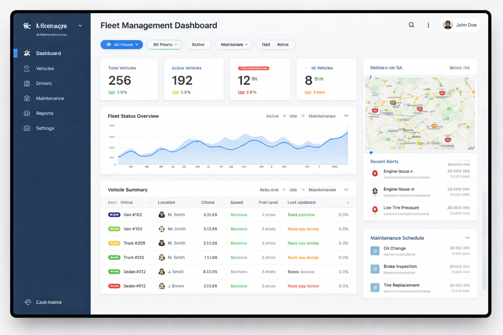
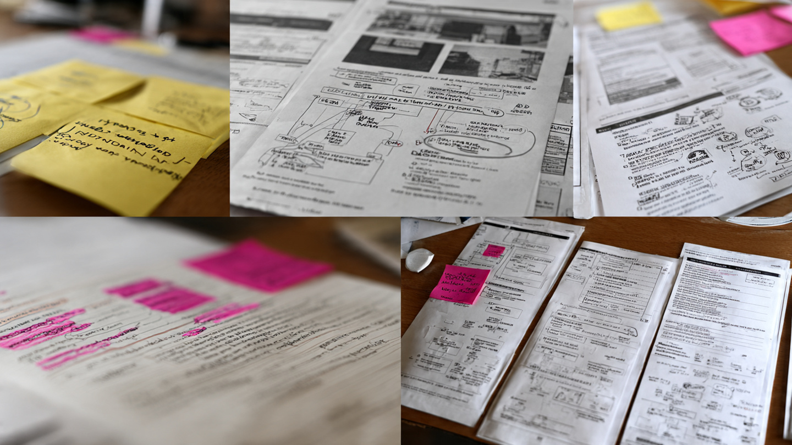
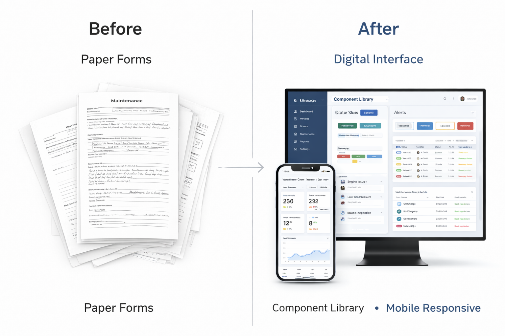

Operations Management Digital Transformation
Transformed paper-based operations management into a digital product, increasing team efficiency by 80% and improving driver onboarding completion by 20%.

Strategic Context
Role
Senior Product Designer
Industry
Transportation & Mobility
Timeline
9 months (2017-2018)
Team
Product Manager, 4 Engineers, Operations Team
The Core Problem
Ola Cabs' operations management relied heavily on manual, paper-based processes that were inefficient, error-prone, and impossible to scale as the company grew rapidly across India.
Critical Operational Challenges
- • Manual processes: Driver assignment and scheduling done via paper sheets and phone calls
- • Data loss: Paper-based documentation leading to incomplete records and inaccuracies
- • No real-time visibility: Operations teams couldn't monitor fleet activity in real-time
- • Complex onboarding: 7-step driver onboarding process with 35% abandonment rate
- • Inefficient communication: Disjointed communication between operations teams and drivers
These inefficiencies were costing the company significant operational expenses and limiting their ability to scale effectively across new cities.
Strategic Goals
Digital Transformation
Replace all paper-based processes with a unified digital operations platform
Simplify Onboarding
Reduce driver onboarding steps and increase completion rates significantly
Real-time Operations
Enable live monitoring and management of fleet operations across cities
Digital Transformation Process
Discovery & Analysis
Conducted extensive fieldwork with operations teams across 3 cities, mapping existing paper workflows, identifying pain points, and understanding the unique challenges of each regional team.
Workflow Digitization
Designed digital equivalents of paper forms with smart validations, auto-save functionality, and offline capability to ensure smooth transition for operations staff.
Real-time Dashboard
Created comprehensive dashboard showing fleet status, driver availability, city performance metrics, and real-time alerts for operational issues.

Field Research Insights
Spending weeks with operations teams revealed that paper wasn't just a medium—it was part of their muscle memory. The challenge wasn't just digitizing forms but preserving the intuitive aspects of their existing workflow while removing the pain points.
Key Design Decisions
Problem
7-step paper-based driver onboarding process had 35% abandonment rate due to complexity, time requirements, and documentation challenges.
Solution
Redesigned onboarding into 4 intuitive digital steps with progress tracking, document scanning via mobile camera, and real-time validation. Added offline capability for areas with poor connectivity.
Problem
Operations teams spent excessive time on manual data entry and coordination, limiting their strategic impact and ability to manage larger territories.
Solution
Created automated workflows and real-time dashboards that prioritized critical information, reduced manual intervention by 80%, and provided predictive insights for resource allocation.

Design System for Scale
Built a reusable component library early in the process, enabling consistent experience across web and mobile interfaces while accelerating development. The system was designed to accommodate regional variations while maintaining core usability standards.
Measured Outcome
Increase in team efficiency
Increase in driver sign-up completion
Reduced onboarding steps
Reduction in design update time
📈 Lessons Learned
Empathy for analog-to-digital transitions: Digital transformation projects require deep empathy for users transitioning from familiar analog workflows. Success came from balancing digital efficiency with the intuitive aspects of existing processes that users valued.
Design for varying connectivity scenarios: In emerging markets, designing for poor or intermittent connectivity is as important as the core features. Offline capabilities and smart sync mechanisms were crucial for adoption.
Component libraries accelerate scaling: Building a reusable component library early enabled rapid expansion to new cities while maintaining consistency. This approach proved especially valuable for a company scaling as rapidly as Ola.
Field research validates assumptions: Time spent observing actual operations revealed workflow nuances that would never have emerged in conference room discussions. This grounded the design in real-world constraints and opportunities.